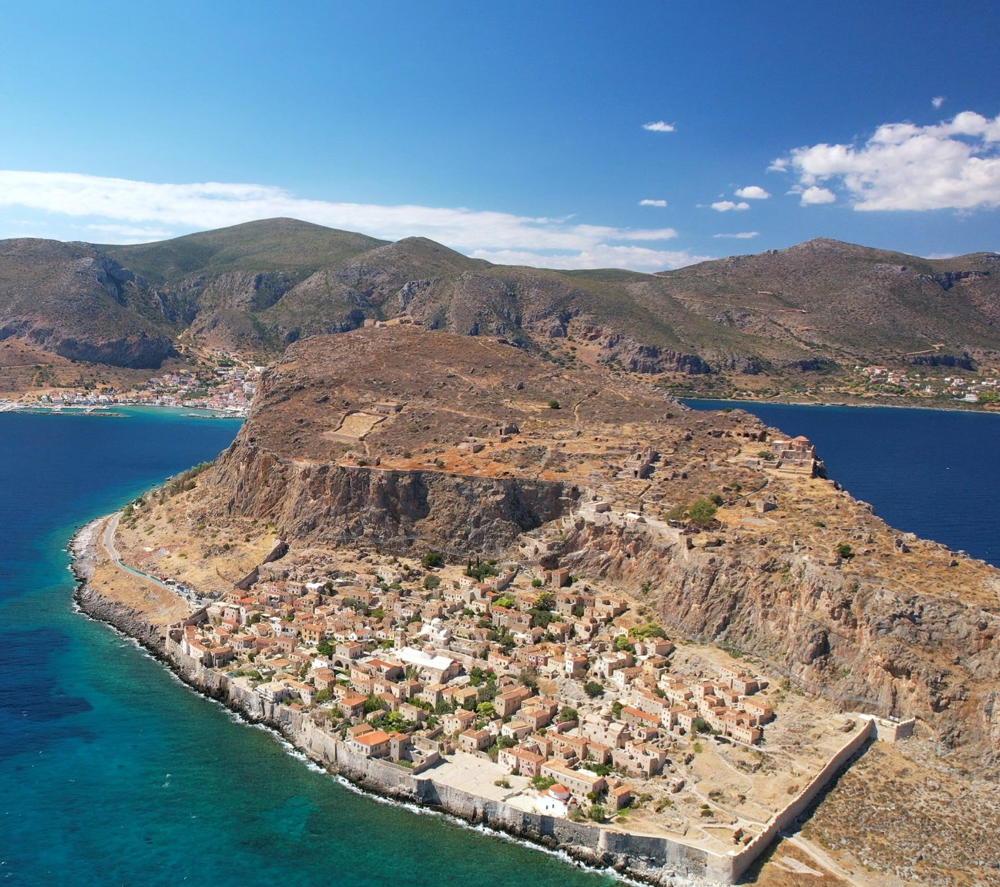
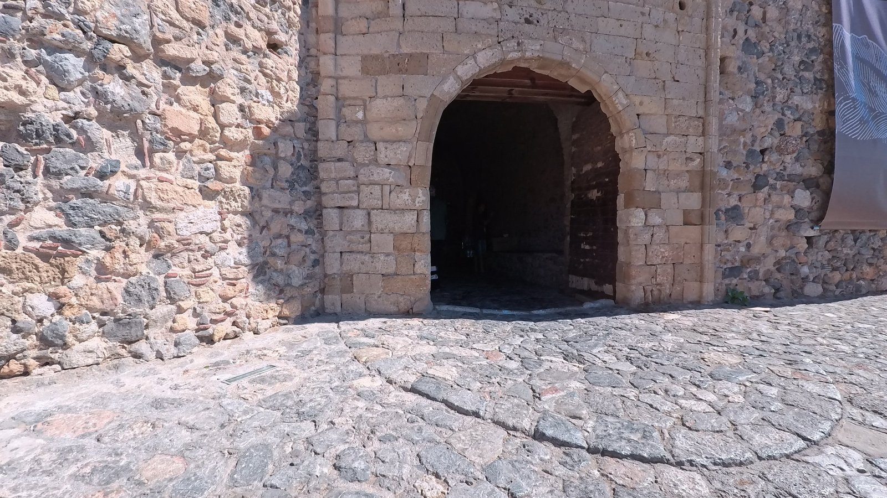
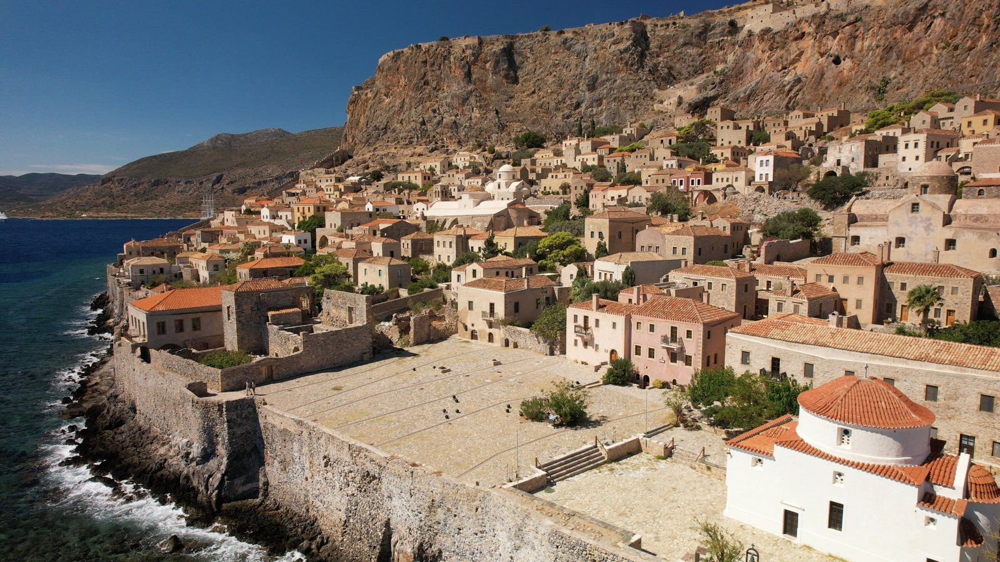
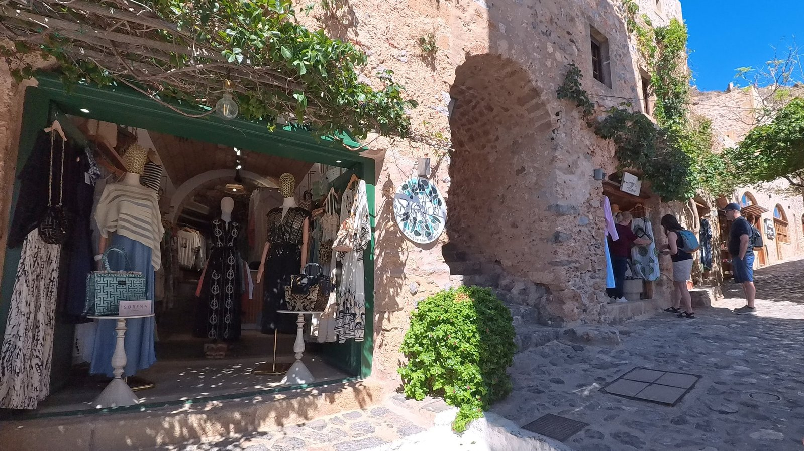
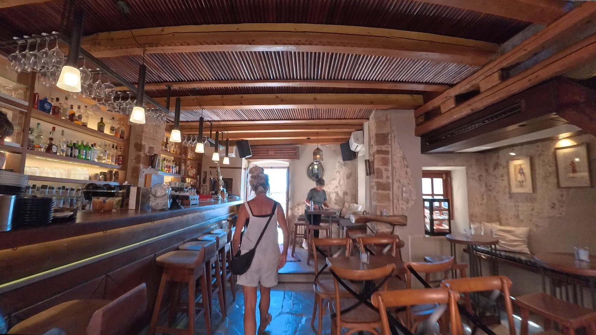
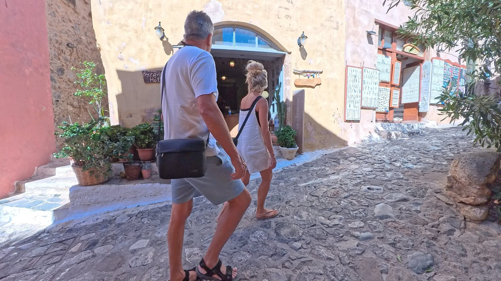
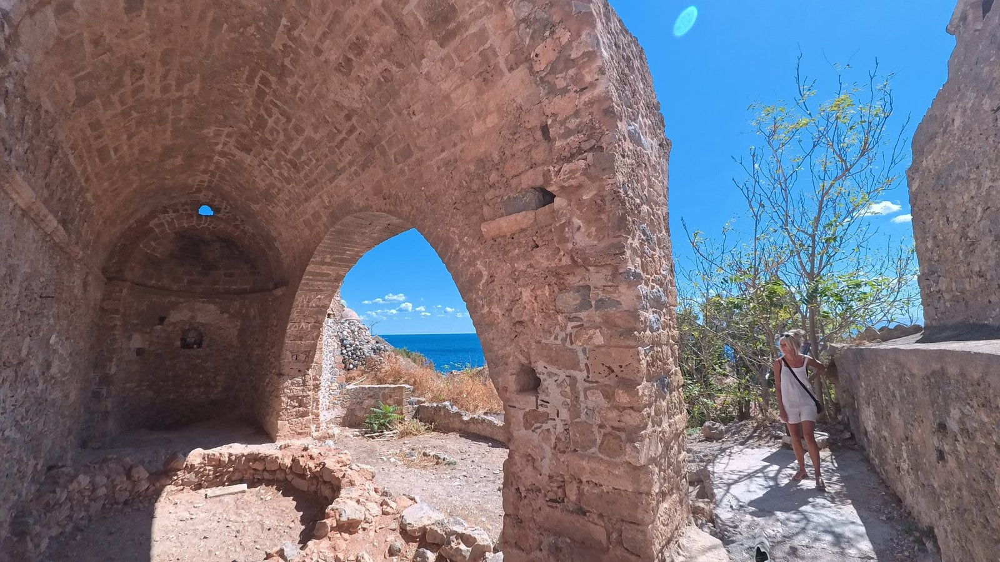
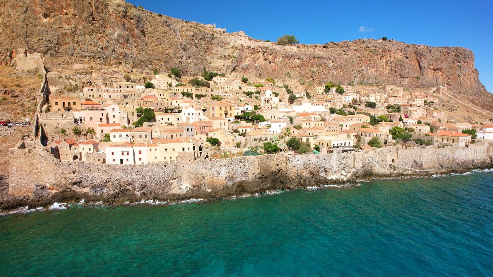
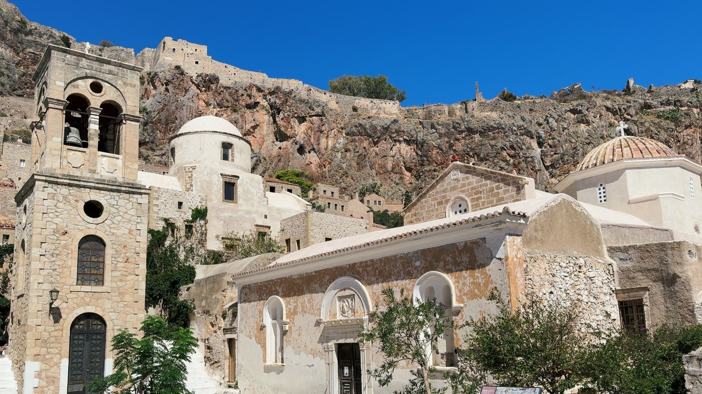
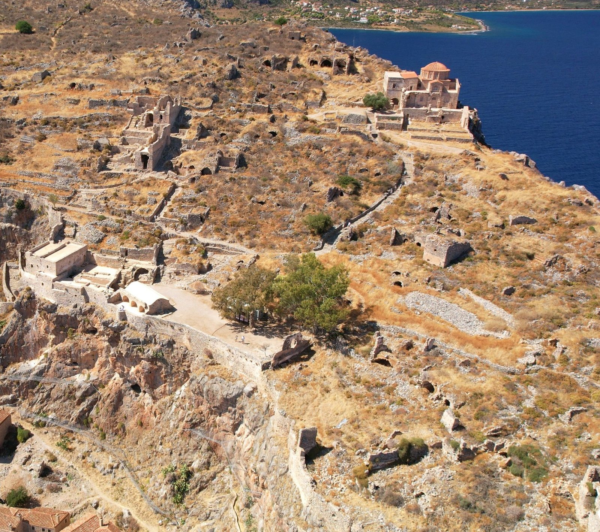

There are some places you visit on holiday that are pleasant enough, and then there are places that make you stop in your tracks and wonder how on earth somebody thought to build a town there in the first place. Monemvasia is definitely one of the latter.
We visited on a day trip from our base at Vigklafia, an easy drive of around 50 minutes, and from the moment we approached this enormous rock rising out of the sea, we knew we were in for something rather special. Hidden behind its towering cliffs is a remarkably preserved medieval town, with winding cobbled lanes, ancient stone buildings, little shops and bars, and views that seem to appear around every corner.
It's a place that feels as though it has been lifted straight out of a history book, although thankfully with rather more opportunities to stop for a drink.
A MEDIEVAL TOWN HIDDEN BEHIND THE ROCK
Monemvasia sits on the south-eastern coast of the Peloponnese, in the Laconia region of Greece. What makes it so unusual is its setting: a huge, imposing limestone rock, roughly 1.5 kilometres long and rising to almost 200 metres, joined to the mainland by a narrow causeway.

The rock was separated from the mainland following a powerful earthquake in AD 375, turning what had been a peninsula into an island. A causeway now provides the connection, and as you approach, the entrance to the old town remains hidden behind the rock until you reach the gateway.
The name Monemvasia comes from the Greek words moni emvasis, meaning ‘single entrance’, which is rather appropriate given that there is only one way into the fortified town.

Once through the main gateway, you enter a completely different world. The Lower Town is a wonderfully atmospheric maze of narrow cobbled streets, stone houses, arched passageways and little courtyards. There are boutique shops selling local crafts and souvenirs, traditional tavernas, tiny cafés and bars tucked into corners you might otherwise walk straight past.
There are no cars inside the fortified town, which adds enormously to its charm. Instead, the streets belong to pedestrians, although some of the steep slopes and uneven paving might have you questioning your choice of footwear.

The town is divided into two distinct areas. The Lower Town is where most of the accommodation, restaurants and shops are found, while the Upper Town sits high above on the rocky plateau. The Upper Town is largely uninhabited today, with ruins, ancient fortifications and churches providing a fascinating glimpse into its past.
OUR DAY EXPLORING MONEMVASIA
We arrived after our straightforward drive from Vigklafia and parked outside the old town before making our way towards the entrance. You can't simply drive into Monemvasia, so be prepared for a bit of walking before you've even started exploring.
Once inside, we spent a good while wandering around the lanes. And when I say wandering, I really do mean wandering. It's surprisingly easy to lose your bearings in the maze of narrow streets, with little passageways leading off in all directions, but that's part of the fun. Every time we thought we'd found our way back to somewhere familiar, another interesting little corner appeared.

There were quirky gift shops, little bars and cafés, and plenty of places to stop and admire the views. We made several refreshment stops along the way, each one seemingly offering a different perspective over the sea.
It's a hard life, but somebody has to do it.

One of the things we particularly liked was that the town didn't feel like a museum that had simply been preserved for tourists. It felt alive. People were going about their day, restaurants were serving food, and accommodation was tucked away behind ancient stone doorways. You could easily imagine spending a couple of nights here, enjoying the atmosphere after the day-trippers have disappeared.
The climb to the Upper Town
We also decided to tackle the climb up towards the fortress and Upper Town. Now, this is where things became a little more energetic.

The route involves steep steps and uneven stone paths, and although it isn't an enormous distance, the climb can be hard work, particularly in the heat. The views, however, are absolutely worth the effort. Looking back across the rooftops and out towards the endless blue of the sea gives you a real appreciation of just how extraordinary this place is.
Jacquie, naturally, had chosen to wear flip-flops, because apparently, despite all the walking holidays we've been on, she still hasn't quite mastered the art of appropriate footwear. I suspect her feet weren't particularly impressed with her decision.

We didn't rush our visit. We took our time, stopped for drinks, explored the little streets and enjoyed the views. In fact, some of our favourite moments were simply sitting outside a café, looking out over the water and watching the world go by.
And that's really what Monemvasia is all about. It's not somewhere you need to race around ticking off attractions.
It's a place to explore slowly, get a little lost and enjoy the atmosphere.
THE HISTORY BEHIND THE FORTRESS
Although it's easy to get distracted by the cafés and pretty streets, Monemvasia has a fascinating history.
The settlement developed in the sixth century AD, when people from the surrounding region sought refuge on the rock from invasions and raids. Its natural defensive position made it an ideal place to build a fortified settlement.

Over the centuries, Monemvasia became an important Byzantine trading port and commercial centre. Its strategic position along Mediterranean shipping routes brought considerable wealth, and it became particularly famous for its sweet wine, known as Malvasia. This wine was exported across Europe and became so well regarded that its name lives on in various forms today.
The town changed hands several times, with Byzantine, Frankish, Venetian and Ottoman rulers all leaving their mark on its architecture and history. It eventually became part of the Greek struggle for independence in 1821.
There are several historical sights worth looking out for during your visit:
- The Main Gateway: The impressive entrance through the fortified walls is the only land access into the old town and marks the beginning of your exploration.
- Elkomenos Christos Church: Located in the main square of the Lower Town, this historic church is one of the town's most important religious landmarks.
- The Upper Town: If you have the energy, make the climb to explore the remains of the old fortress settlement, with its ruined buildings, walls and spectacular views.
- Agia Sophia Church: One of the most striking buildings on the rock, this Byzantine church dates from around the 12th century and sits dramatically on the edge of the Upper Town.
- The old mansions and churches: Even if you aren't particularly interested in history, the architecture and details of the old stone buildings are worth taking the time to appreciate.


The Upper Town is particularly rewarding for anyone interested in history, although you'll need decent footwear and a reasonable level of fitness to explore it comfortably.
BEST THINGS TO SEE AND DO IN MONEMVASIA
You could easily spend a full day here without running out of things to do. Our suggestions would be:
- Explore the Lower Town. Wander through the cobbled lanes, discover hidden courtyards and browse the little shops. Don't worry too much about following a route.
- Climb to the Upper Town. It's a challenging walk in places, but the ruins and panoramic views make it worthwhile.
- Visit Agia Sophia. This beautiful Byzantine church is one of the highlights of the fortress.
- Enjoy a leisurely lunch. There are plenty of restaurants and tavernas, many with lovely sea views. Try some local dishes and, if you enjoy wine, look out for Malvasia.
- Stop for drinks with a view. One of the pleasures of Monemvasia is finding a little bar or café overlooking the sea. We certainly made the most of this.
- Stay overnight. If time allows, consider spending a night inside the castle town. Experiencing the narrow streets in the quieter evening hours, once the day visitors have left, must be rather special.
PRACTICAL TIPS FOR VISITING MONEMVASIA
A little planning will make your visit much more enjoyable, particularly if you're visiting during the summer.
- Getting there: Monemvasia is on the south-eastern coast of the Peloponnese. We drove from Vigklafia in approximately 50 minutes. It's also an easy day trip if you're staying around Neapoli or exploring the wider Laconia region. Read our car hire tips, then compare prices on DiscoverCars, before you book.
- Parking: You cannot drive into the old fortified town. There are parking areas and roadside spaces outside the entrance and along the approach from the causeway. We parked in the town and walked up, but spaces can become very limited during the busy summer months. Arriving earlier in the day is a sensible idea.
- Walking and footwear: This is definitely not a destination for high heels or flimsy flip-flops! The cobbled streets are uneven, there are plenty of steps and the climb to the Upper Town is steep in places. Comfortable walking shoes are strongly recommended.
- The heat: Summer temperatures can be high, and the narrow streets offer limited opportunities to catch a breeze. Take water, wear a hat and consider exploring earlier in the morning or later in the afternoon.
- Staying overnight: If you book accommodation inside the castle walls, remember that your car cannot reach your front door. You'll need to carry your luggage through the gateway and along the cobbled streets, sometimes uphill. Check with your accommodation about luggage assistance before arriving.
- When to visit: Spring and autumn are particularly good times, with more comfortable temperatures for exploring. July and August can be extremely hot and busy. See our guide to when to go.
OUR VERDICT – IS MONEMVASIA WORTH VISITING?
Absolutely!
Monemvasia is one of those places that stays with you long after you've left. It's quirky, atmospheric, steeped in history and quite unlike anywhere else we've visited in the Peloponnese.
We loved the winding streets, the little bars and restaurants, the spectacular views and the opportunity to simply sit back and enjoy the surroundings.
If you're staying around Vigklafia, Neapoli or elsewhere in the south-eastern Peloponnese, it's a definite must-see. You could visit for the day as we did, or make an overnight stay of it.
Would we go again? Definitely. It's a fabulous place to eat, drink, explore and watch the world go by. Just remember to bring sensible shoes.
Somebody needs to have a word with Jacquie.